Learn, in the app
Know what you’re looking at.
Learn holds biomes, to see why each landscape holds the life it does; family and group pages, to see what relatives have in common and how to recognise them; and essays, for the ideas that don’t fit on a species card.
Counted on 13 October 2026.
Biomes · 25
From páramo to mangrove.
-

Páramo
Photo: VeRdUgO PY · CC BY-SA 4.0 -

Cloud Forest
Photo: Petruss · CC BY-SA 3.0 -

Andean Forest
Photo: Juanpablo.madrid-malo · CC BY-SA 4.0 -

Tropical Dry Forest
Photo: Petruss · CC BY-SA 3.0 -

Wetland
Photo: Turntciaga · CC BY-SA 4.0 -

Urban Green Space
Photo: CARITO PABÓN · CC BY-SA 2.0 -

Mangrove
Photo: Diego Tirira · CC BY-SA 2.0 -

Coastal Beach
Photo: Alejandro Bayer Tamayo · CC BY-SA 2.0


.jpg){kind=link}
.jpg){kind=link}
And 17 more
- Agricultural Mosaic
- Amazon Lowland Forest
- Caribbean Lowland Forest
- Coral Reef
- Dry Scrubland
- Flooded Forest (Várzea)
- Freshwater Lake & River
- Open Ocean
- Pacific Lowland Forest
- Palm Swamp
- Riparian Forest
- Rocky Shoreline
- Savanna (Llanos)
- Sub-Andean Forest
- Sub-Páramo
- Tropical Grassland
- Tropical Rainforest
Photos from Wikimedia Commons, cropped.
Families and groups · 164
Who’s related to whom.
Plants 59
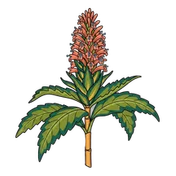
Acanthaceae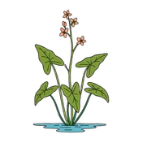
Alismatales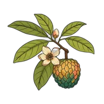
Annonaceae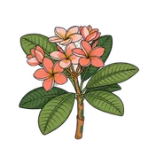
Apocynaceae AroidsAraceae
AroidsAraceae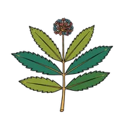
Araliaceae PalmsArecaceae
PalmsArecaceae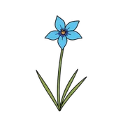
Asparagales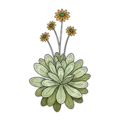
Asteraceae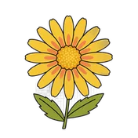
Asterales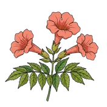
Bignoniaceae BromeliadsBromeliaceae
BromeliadsBromeliaceae CactiCactaceae
CactiCactaceae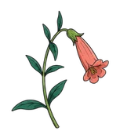
Campanulaceae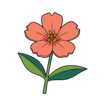
Caryophyllales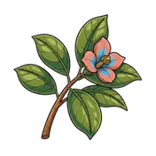
Clusiaceae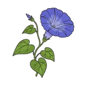
Convolvulaceae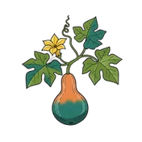
Cucurbitaceae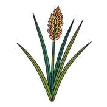
Cyperaceae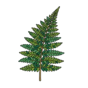
Dryopteridaceae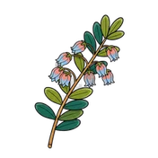
Ericaceae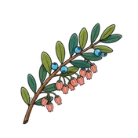
Ericales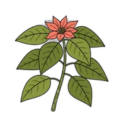
Euphorbiaceae LegumesFabaceae
LegumesFabaceae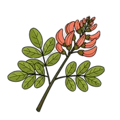
Fabales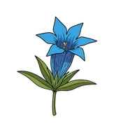
Gentianaceae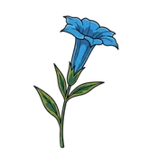
Gentianales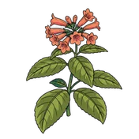
Gesneriaceae HeliconiasHeliconiaceae
HeliconiasHeliconiaceae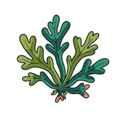
Jungermanniales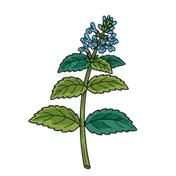
Lamiaceae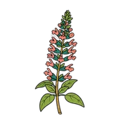
Lamiales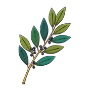
Lauraceae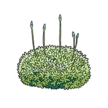
Leucobryaceae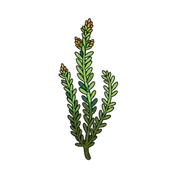
Lycopodiaceae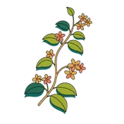
Malpighiaceae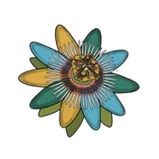
Malpighiales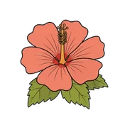
Malvaceae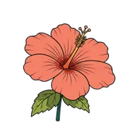
Malvales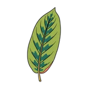
Marantaceae MelastomesMelastomataceae
MelastomesMelastomataceae Mulberries and FigsMoraceae
Mulberries and FigsMoraceae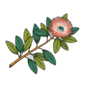
Myrtaceae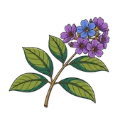
Myrtales OrchidsOrchidaceae
OrchidsOrchidaceae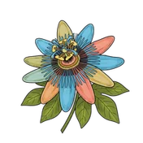
Passifloraceae Pepper FamilyPiperaceae
Pepper FamilyPiperaceae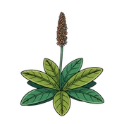
Plantaginaceae GrassesPoaceae
GrassesPoaceae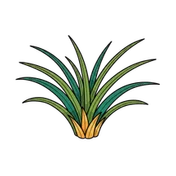
Poales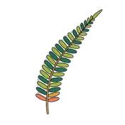
Polypodiaceae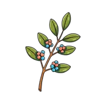
Primulaceae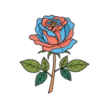
Rosaceae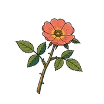
Rosales Coffee FamilyRubiaceae
Coffee FamilyRubiaceae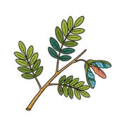
Sapindaceae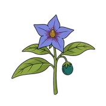
Solanaceae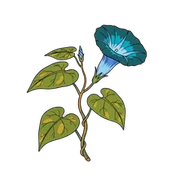
Solanales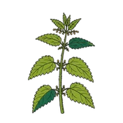
Urticaceae
Birds 35
 Hawks, Eagles, and KitesAccipitridae
Hawks, Eagles, and KitesAccipitridae KingfishersAlcedinidae
KingfishersAlcedinidae Ducks, Geese, and SwansAnatidae
Ducks, Geese, and SwansAnatidae SwiftsApodidae
SwiftsApodidae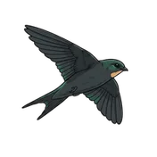
Apodiformes Herons and egretsArdeidae
Herons and egretsArdeidae Nightjars and NighthawksCaprimulgidae
Nightjars and NighthawksCaprimulgidae Cardinals and GrosbeaksCardinalidae
Cardinals and GrosbeaksCardinalidae Pigeons and DovesColumbidae
Pigeons and DovesColumbidae Crows and JaysCorvidae
Crows and JaysCorvidae CotingasCotingidae
CotingasCotingidae Guans, Curassows, and ChachalacasCracidae
Guans, Curassows, and ChachalacasCracidae Falcons and CaracarasFalconidae
Falcons and CaracarasFalconidae Ovenbirds and WoodcreepersFurnariidae
Ovenbirds and WoodcreepersFurnariidae AntpittasGrallariidae
AntpittasGrallariidae Oropendolas, Orioles, and BlackbirdsIcteridae
Oropendolas, Orioles, and BlackbirdsIcteridae HoatzinOpisthocomidae
HoatzinOpisthocomidae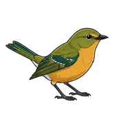
Parulidae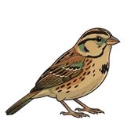
Passerellidae- Passeriformes
 WoodpeckersPicidae
WoodpeckersPicidae ParrotsPsittacidae
ParrotsPsittacidae Rails, Crakes, and CootsRallidae
Rails, Crakes, and CootsRallidae ToucansRamphastidae
ToucansRamphastidae- Scolopacidae
 OilbirdSteatornithidae
OilbirdSteatornithidae Owls, pygmy-owls and screech-owlsStrigidae
Owls, pygmy-owls and screech-owlsStrigidae OwlsStrigiformes
OwlsStrigiformes AntbirdsThamnophilidae
AntbirdsThamnophilidae TanagersThraupidae
TanagersThraupidae HummingbirdsTrochilidae
HummingbirdsTrochilidae WrensTroglodytidae
WrensTroglodytidae Trogons and QuetzalsTrogonidae
Trogons and QuetzalsTrogonidae ThrushesTurdidae
ThrushesTurdidae Tyrant FlycatchersTyrannidae
Tyrant FlycatchersTyrannidae
Invertebrates 24
 BeesApidae
BeesApidae Orb-weaver SpidersAraneidae
Orb-weaver SpidersAraneidae Bark Scorpions and ButhidsButhidae
Bark Scorpions and ButhidsButhidae- Coleoptera
- Crambidae
- Erebidae
- Formicidae
- Geometridae
- Hemiptera
- Hesperiidae
- Hymenoptera
 Butterflies and mothsLepidoptera
Butterflies and mothsLepidoptera Skimmer DragonfliesLibellulidae
Skimmer DragonfliesLibellulidae- Lycaenidae
- Noctuidae
- Nymphalidae
- Pieridae
 Jumping SpidersSalticidae
Jumping SpidersSalticidae- Saturniidae
- Scarabaeidae
- Sphingidae
- Syrphidae
- Tettigoniidae
 TarantulasTheraphosidae
TarantulasTheraphosidae
Reptiles and amphibians 5
 Frogs and toadsAnura
Frogs and toadsAnura- Colubridae
 Rain FrogsCraugastoridae
Rain FrogsCraugastoridae- Hylidae
 SnakesSerpentes
SnakesSerpentes
Mammals 5
 Spider, woolly, and howler monkeysAtelidae
Spider, woolly, and howler monkeysAtelidae BatsChiroptera
BatsChiroptera- Cricetidae
 CatsFelidae
CatsFelidae- Phyllostomidae
Fish 4
 Tetras and CharacinsCharacidae
Tetras and CharacinsCharacidae CichlidsCichlidae
CichlidsCichlidae Electric Eels and KnifefishGymnotidae
Electric Eels and KnifefishGymnotidae Armored CatfishLoricariidae
Armored CatfishLoricariidae
Fungi 32
 MushroomsAgaricales
MushroomsAgaricales- Tapinellaceae
 Auriculariaceae
Auriculariaceae- Dacrymycetaceae
 Naemateliaceae
Naemateliaceae Tremellaceae
Tremellaceae Auriscalpiaceae
Auriscalpiaceae- Clavariaceae
 Pterulaceae
Pterulaceae Xylariaceae
Xylariaceae BoletesBoletales
BoletesBoletales Calostomataceae
Calostomataceae Geastraceae
Geastraceae Lycoperdaceae
Lycoperdaceae Rhizopogonaceae
Rhizopogonaceae- Sclerodermataceae
- Cladoniaceae
- Cordycipitaceae
 Ophiocordycipitaceae
Ophiocordycipitaceae Hymenochaetaceae
Hymenochaetaceae Bracket FungiPolyporales
Bracket FungiPolyporales- Stereaceae
- Lecanorales
 Lichens
Lichens- Parmeliaceae
 Pezizaceae
Pezizaceae Pyronemataceae
Pyronemataceae Sarcoscyphaceae
Sarcoscyphaceae- Sarcosomataceae
- Phallaceae
 PolyporesPolyporaceae
PolyporesPolyporaceae Brittlegills and Milk-capsRussulales
Brittlegills and Milk-capsRussulales
Among the fungi, families of a similar shape share a drawing.
Illustrations: Tawari.
Essays · 17
For a slower read.
Conservation · 8 min
Corridor thinking: why isolated reserves aren't enough
Conservation · 7 min
Endemic, native, introduced: a vocabulary card
Conservation · 8 min
The spectacled bear: a mostly-vegetarian giant in the Andean clouds
Conservation · 7 min
What a protected area actually protects
Conservation · 6 min
What the Red List actually measures
Conservation · 7 min
Why species go extinct
Identification · 6 min
Bird identification 101: how to see what you're looking at
Identification · 9 min
Fungi identification 101: why a spore print is more reliable than any photograph
Identification · 9 min
Reptile and amphibian identification 101: shape, substrate, and sound
Identification · 6 min
The morning mixed-flock: why fifteen bird species suddenly arrive together
Concepts · 7 min
How species get their names
Concepts · 7 min
Mushrooms, fungi, and the wood-wide web: a vocabulary you can actually use
Concepts · 7 min
What endemic actually means
Regions · 7 min
Coffee and forest: the only crop that loves shade
Regions · 7 min
How seasons work in the tropics: why Colombia has no winter, but plenty of weather
Culture · 6 min
Cilantro and coriander: one plant, two cuisines, a soap controversy
Taxonomy · 8 min
Why Colombia has no apes
Waitlist
All of this is in the app.
We’ll write to you once, when your beta invitation is ready.